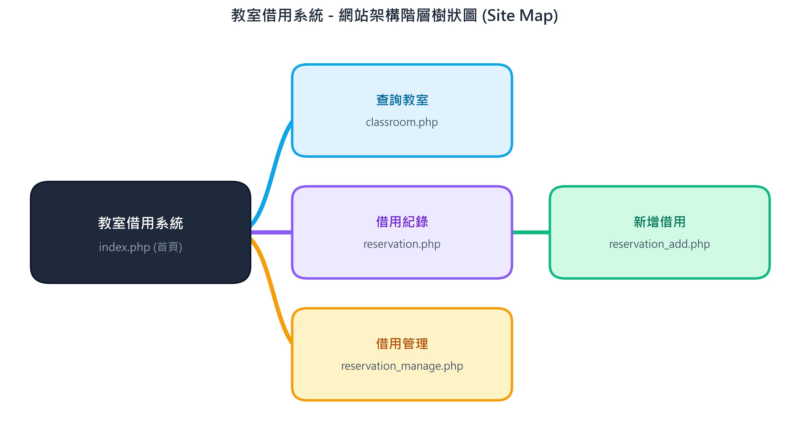
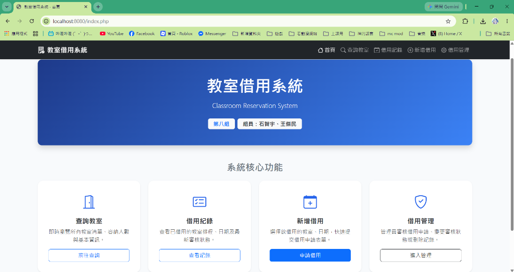
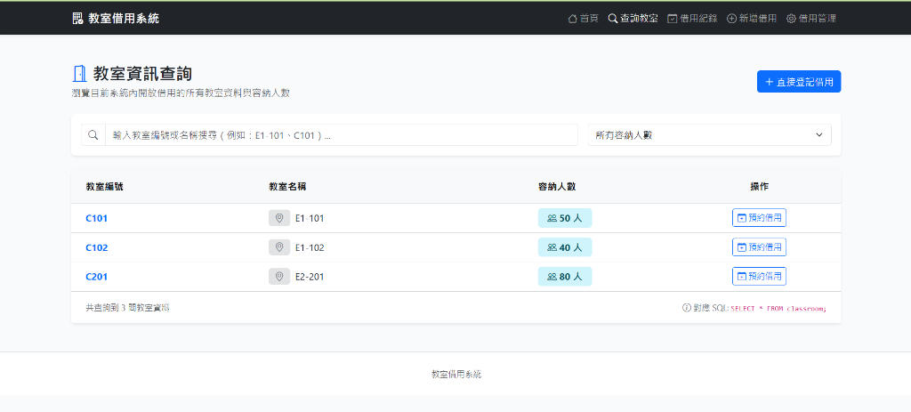
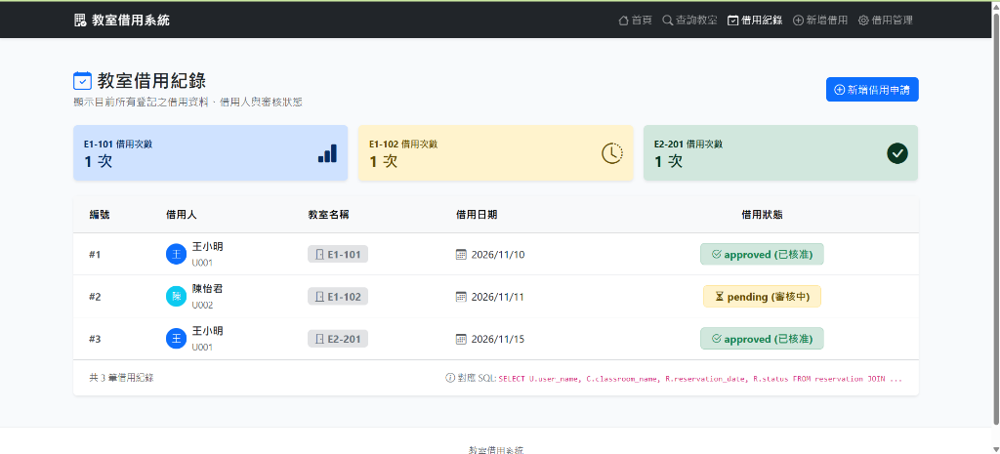
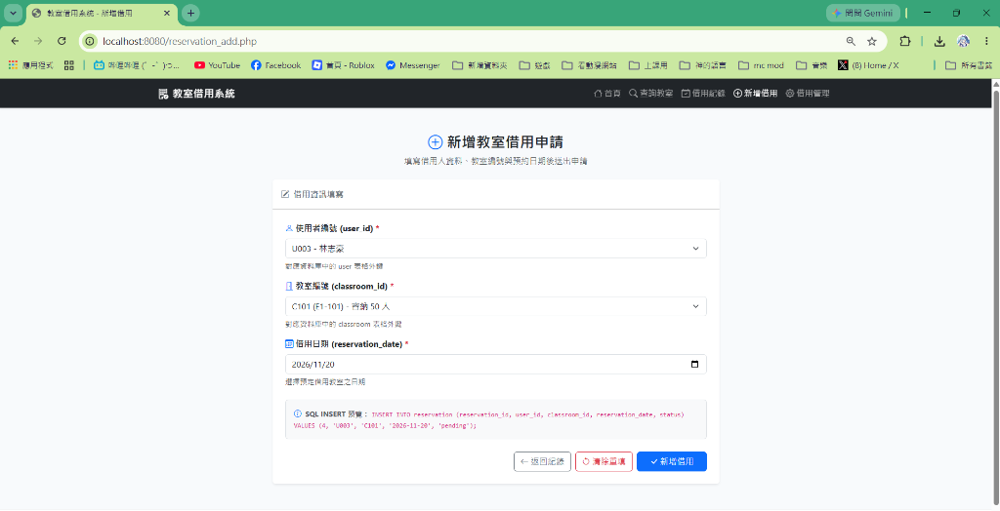
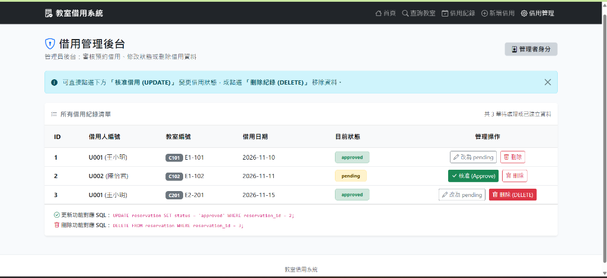

本系統主要提供使用者查詢教室資訊及進行教室借用。使用者可以查詢目前系統中的教室資料，並新增自己的教室借用紀錄。
系統也提供管理功能，可以查看目前所有借用紀錄，並修改借用狀態或刪除借用資料。
為了簡化系統，本系統假設每一筆借用紀錄只對應一位使用者及一間教室。
CREATE TABLE user (
user_id varchar(10) NOT NULL,
user_name varchar(50) NOT NULL,
PRIMARY KEY (user_id)
);
| user_id | user_name |
|---|---|
| U001 | 王小明 |
| U002 | 陳怡君 |
| U003 | 林志豪 |
CREATE TABLE classroom (
classroom_id varchar(10) NOT NULL,
classroom_name varchar(50) NOT NULL,
capacity int NOT NULL,
PRIMARY KEY (classroom_id)
);
| classroom_id | classroom_name | capacity |
|---|---|---|
| C101 | E1-101 | 50 |
| C102 | E1-102 | 40 |
| C201 | E2-201 | 80 |
CREATE TABLE reservation (
reservation_id int NOT NULL,
user_id varchar(10) NOT NULL,
classroom_id varchar(10) NOT NULL,
reservation_date date NOT NULL,
status varchar(20) NOT NULL,
PRIMARY KEY (reservation_id),
FOREIGN KEY (user_id) REFERENCES user(user_id),
FOREIGN KEY (classroom_id) REFERENCES classroom(classroom_id)
);
| reservation_id | user_id | classroom_id | reservation_date | status |
|---|---|---|---|---|
| 1 | U001 | C101 | 2026-11-10 | approved |
| 2 | U002 | C102 | 2026-11-11 | pending |
| 3 | U001 | C201 | 2026-11-15 | approved |
SELECT * FROM classroom;
SELECT U.user_name, C.classroom_name, R.reservation_date, R.status FROM reservation AS R JOIN user AS U ON R.user_id = U.user_id JOIN classroom AS C ON R.classroom_id = C.classroom_id;
SELECT classroom_id, COUNT(*) AS reservation_count FROM reservation GROUP BY classroom_id;
INSERT INTO reservation (reservation_id, user_id, classroom_id, reservation_date, status) VALUES (4, 'U003', 'C101', '2026-11-20', 'pending');
UPDATE reservation SET status = 'approved' WHERE reservation_id = 2;
DELETE FROM reservation WHERE reservation_id = 3;






組員 A：
● 建立資料庫
● 設計 user、classroom、reservation 三個表格
● 撰寫 classroom.php
● 撰寫 reservation_add.php
組員 B：
● 撰寫 reservation.php
● 撰寫 reservation_manage.php
● 負責修改與刪除功能
● 負責網頁畫面設計
兩人共同負責系統測試、網站整合及書面報告整理。